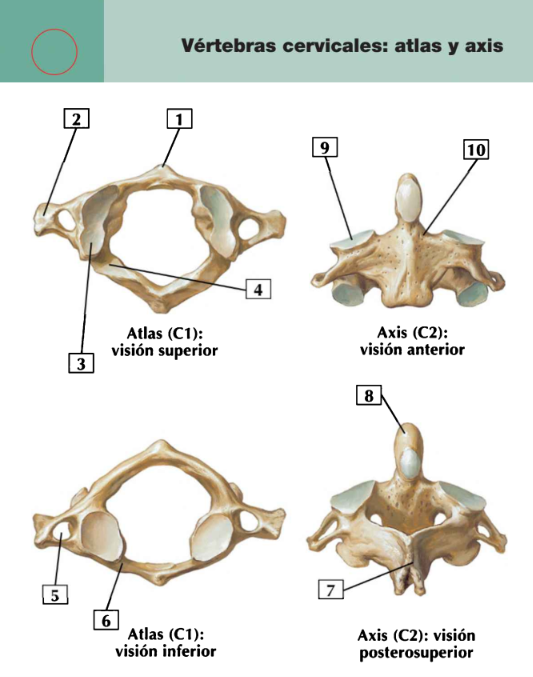
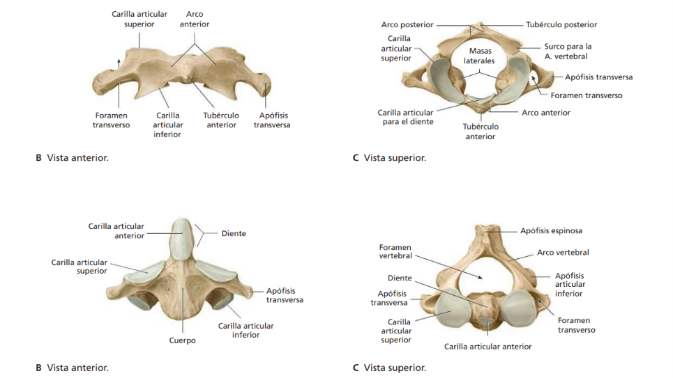
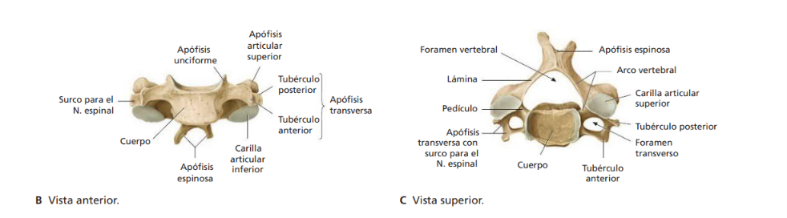
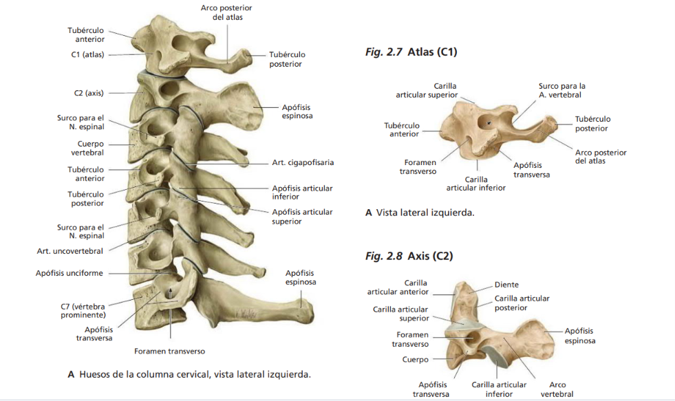
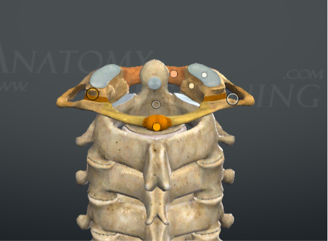
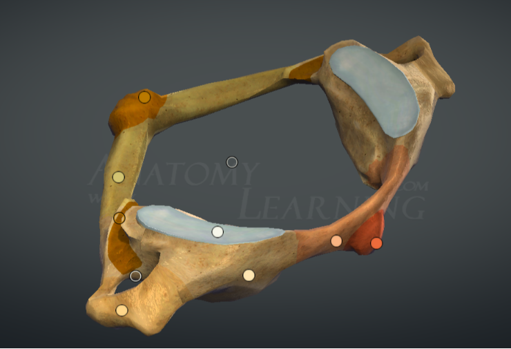
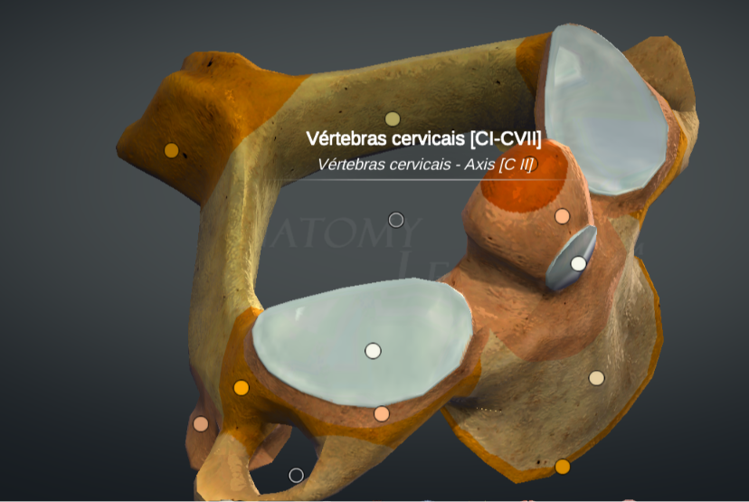

ClinicusMed · Atlas de Anatomia Prática — Ficha Padronizada
O Atlas (C1) e o Axis (C2) são as 2 primeiras vértebras cervicais, localizadas na base do crânio, imediatamente abaixo do osso occipital. Juntas, formam a articulação atlantoaxial e a articulação atlanto-occipital — a região que permite os movimentos de rotação e afirmação/negação da cabeça. São as vértebras cervicais mais ATÍPICAS de toda a coluna.
Ao final dessa ficha, você será capaz de reconhecer o Atlas e o Axis em qualquer vista (superior, inferior, anterior, posterior), identificar seus acidentes anatômicos únicos (ausência de corpo no atlas, presença do dente no axis), e entender a base anatômica das 2 fraturas clássicas associadas a essas vértebras.

| Número | Estrutura Anatômica |
|---|---|
| 1 | Tubérculo anterior |
| 2 | Apófise transversa |
| 3 | Carilha articular superior da massa lateral pro côndilo do occipital |
| 4 | Sulco pra artéria vertebral |
| 5 | Forame transverso |
| 6 | Arco anterior |
| 7 | Apófise espinhosa |
| 8 | Dente (apófise odontoide) |
| 9 | Carilha articular superior pro atlas |
| 10 | Pedículo |
| Aspecto | Frequência |
|---|---|
| Diferenciação Atlas x Axis (ausência de corpo x presença de dente) | 🔥🔥🔥🔥🔥 |
| Dente (Apófise Odontoide) | 🔥🔥🔥🔥🔥 |
| Forame Transverso | 🔥🔥🔥🔥 |
| Fratura de Jefferson x Fratura do Enforcado | 🔥🔥🔥🔥 |
| Arcos anterior/posterior do Atlas | 🔥🔥🔥 |
| Condição | Descrição |
|---|---|
| Fratura de Jefferson | Golpe na parte superior da cabeça pode fraturar o Atlas, tipicamente através do arco anterior OU posterior |
| Fratura do Enforcado (Hangman's Fracture) | Fratura do Axis, geralmente afetando o dente ou atravessando o arco neural entre as carilhas articulares superior e inferior |
Vamos acompanhar um caso de trauma cervical após acidente automobilístico, aplicando os conceitos anatômicos vistos nessa ficha. O caso evolui em 3 níveis.
10 rodadas, 1 estrutura numerada por vez, 60 segundos pra você identificar. A imagem muda sozinha quando o tempo acaba (ou clica em "Já sei, próxima"). No final, você vê o gabarito completo de tudo.
Atlas e Axis — Vistas Anterior e Superior (detalhado):

Vértebra Cervical Típica — Vistas Anterior e Superior (comparação):

Coluna Cervical Completa (C1-C7) + Detalhe Atlas/Axis:

Modelo 3D — Atlas/Axis, vista superior:

Modelo 3D — Atlas/Axis, vista lateral:

Modelo 3D — Vértebras Cervicais Completas:

O sistema guarda, no seu navegador, quais cards você já sabe bem e quais precisam voltar mais cedo — cada vez que você avalia um card, ele recalcula quando ele deve voltar.
8 questões (5 objetivas + 2 de identificação prática + 1 caso clínico). Escolhe uma alternativa, depois clica em "Ver comentário completo".